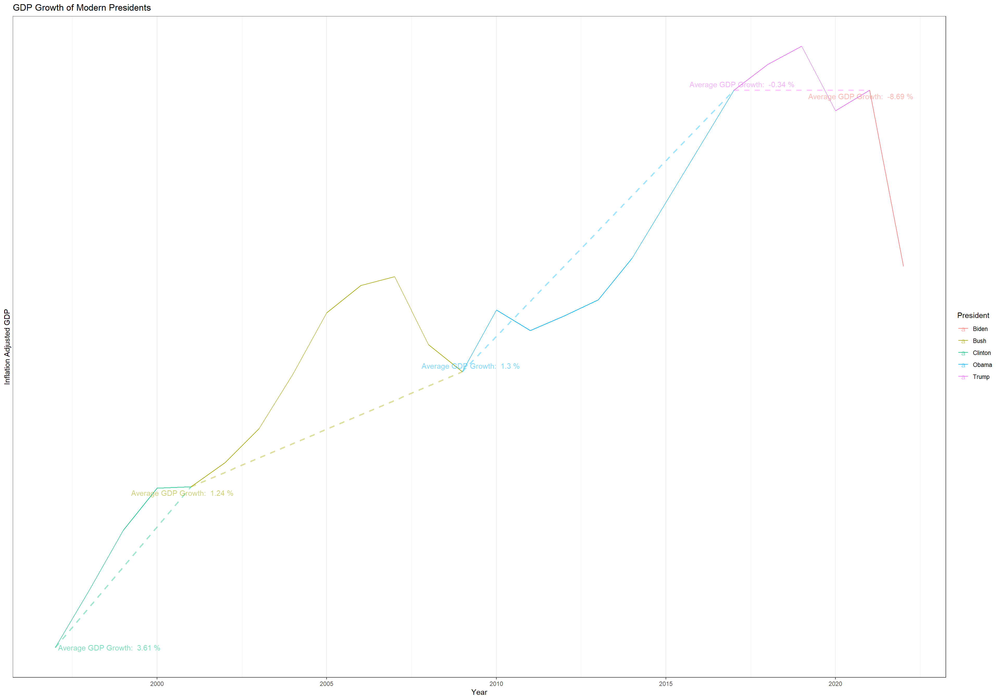
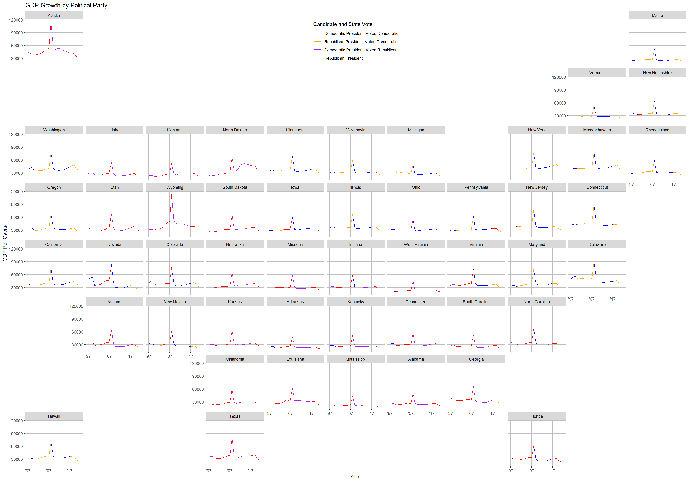
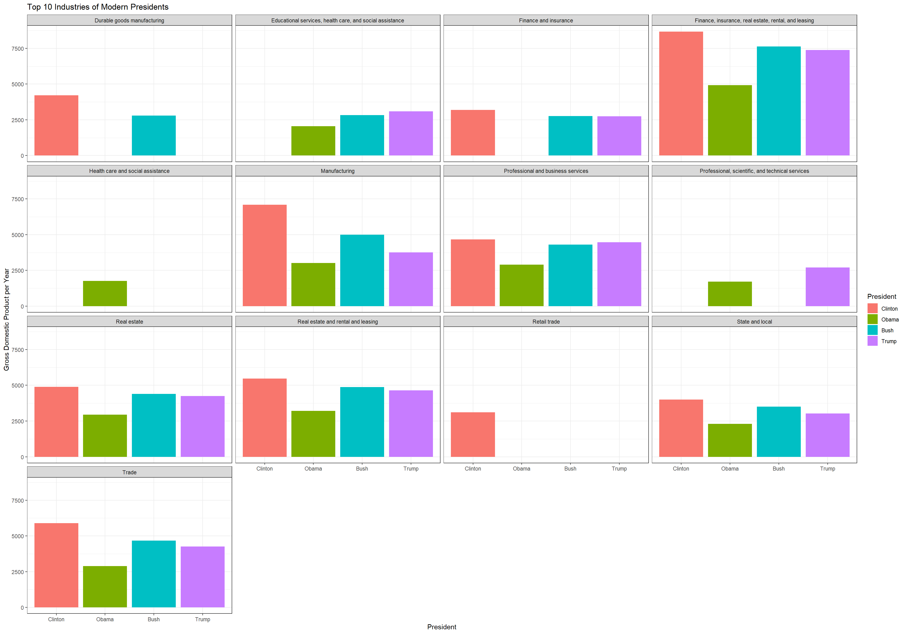

knitr::opts_chunk$set(fig.width=20, fig.height = 14)The following is an economic analysis using BEA (Bureau of Economic Analysis) data to examine how the economy performed during terms of modern U.S. presidents. The focus is upon Gross Domestic Product (GDP) which is considered a good measure of the productivity of an economy. Growth in GDP is the standard and 1 % or less increase in GDP is considered to be a poor performance.
library(tidyverse)
library(sf)
library(USAboundaries)
library(geofacet)
library(ggrepel)
df <- read_csv("~/WebsitePortfolio/projdata.csv")
df2 <- df %>% select(-`2015`)
year_cols <- df2 %>% select(matches("^(19|20)"))
col_names <- names(year_cols)
df2[col_names] <- lapply(df2[col_names], as.numeric)
df3 <- pivot_longer(df2, cols = matches("^(19|20)"), names_to = "Year")
df4 <- df3 %>% mutate(President = case_when(Year <= 2000 ~ "Clinton", Year >= 2001 & Year <= 2008 ~ "Bush", Year >= 2009 & Year <= 2016 ~ "Obama", Year >= 2017 & Year < 2021 ~ "Trump", Year >= 2021 ~ "Biden"))
total_gdp <- df4 %>% filter(Description == "All industry total") %>% group_by(Year, President) %>% summarise(TotalGDP = sum(value, na.rm = TRUE)*1000000)
inflation_rate = c(.023, .039, .061, .095, .123, .139, .162, .189, .213, .245, .274, .312, .308, .3096, .3416, .3626, .3776, .3892, .4102, .4326, .4506, .4626, .5096, .5896)
total_gdp2 <- cbind(total_gdp, inflation_rate = inflation_rate)
total_gdp3 <- total_gdp2 %>% mutate(inflation_adjusted = as.numeric(TotalGDP*(1-inflation_rate), Year = as.numeric(Year)))
avg_gdp_growth <- total_gdp3 %>% group_by(President) %>% arrange(Year) %>% summarise(first_gdp = first(inflation_adjusted), last_gdp = last(inflation_adjusted), first_year = as.numeric(first(Year)), last_year = as.numeric(last(Year))) %>% mutate(gdp_diff = last_gdp - first_gdp, year_diff = last_year - first_year)
avg_gdp_growth2 <- avg_gdp_growth %>% mutate(gdp_growth = gdp_diff/year_diff)When examining the chart below, we see that presidents prior to the global pandemic performed reasonably well, all have a GDP greater than 1% when adjusting for inflation. President Clinton performed the best, with over 3.5% GDP growth over his second term. President Trump and President Biden appear to struggle because of the global pandemic, where President Trump was trending upward until that point. The poor performance of the first year of the Biden administration is likely linked to high inflation, causing a much lower inflation adjusted GDP. Overall, we see a trend of a few years of prosperity and downturn, which is considered to be a part of the economic cycle. It is difficult to experience constant growth, and so we see downturns in every modern presidency.
ggplot(total_gdp3, aes(x = as.numeric(Year), y = inflation_adjusted, group = 1, color = President)) +
geom_line() +
geom_segment(x = 1997, xend = 2001, y = total_gdp3$inflation_adjusted[[1]], yend = total_gdp3$inflation_adjusted[[5]], aes(color = "Clinton"), size = 1, lty = 2, alpha = 0.02) +
geom_segment(x = 2001, xend = 2009, y = total_gdp3$inflation_adjusted[[5]], yend = total_gdp3$inflation_adjusted[[13]], aes(color = "Bush"), size = 1, lty = 2, alpha = 0.02) +
geom_segment(x = 2009, xend = 2017, y = total_gdp3$inflation_adjusted[[13]], yend = total_gdp3$inflation_adjusted[[19]], aes(color = "Obama"), size = 1, lty = 2, alpha = 0.02) +
geom_segment(x = 2017, xend = 2021, y = total_gdp3$inflation_adjusted[[19]], yend = total_gdp3$inflation_adjusted[[23]], aes(color = "Trump"), size = 1, lty = 2, alpha = 0.02) +
geom_text_repel(data = avg_gdp_growth2, mapping = aes(x = first_year, y = first_gdp, label = paste("Average GDP Growth: ", round(gdp_growth/first_gdp * 100, 2), "%")), alpha = 0.5) +
scale_x_continuous(n.breaks = 5) + scale_y_continuous(breaks = c(8000000000000, 16000000000000, 24000000000000), labels = c("8 Trillion", "16 Trillion", "24 Trillion")) + labs(y = "Inflation Adjusted GDP", x = "Year", title = "GDP Growth of Modern Presidents") +
theme_bw()
On a federal level, it is difficult to say what kind of effect political party has on the country in modern times. We will examine the economy on a state level, where perhaps Presidents show some level of favoritism towards their stronghold states. For example, perhaps President Obama pushed economic policy that strengthens states such as California and New York, where support is strong. Or perhaps President Bush pushed policies that would help his home state of Texas.
usshape <- us_states()
state_gdp <- df3 %>% filter(Description == "All industry total")
state_gdp2 <- state_gdp %>% left_join(usshape, join_by(GeoName == name))
state_gdp3 <- state_gdp2 %>% mutate(decade = case_when(Year < 2000 ~ 1990, Year >= 2000 & Year < 2010 ~ 2000, Year >= 2010 & Year < 2020 ~ 2010, Year >= 2020 ~ 2020))
state_gdp4 <- state_gdp3 %>% mutate(election_year = case_when(Year >= 1996 & Year < 2000 ~ 1996,
Year >= 2000 & Year < 2004 ~ 2000,
Year >= 2004 & Year < 2008 ~ 2004,
Year >= 2008 & Year < 2012 ~ 2008,
Year >= 2012 & Year < 2016 ~ 2012,
Year >= 2016 & Year < 2020 ~ 2016,
Year >= 2020 ~ 2020))
state_gdp5 <- state_gdp4 %>% mutate(ir = case_when(Year == 1997 ~ .023, Year == 1998 ~ .039, Year == 1998 ~.061, Year == 1999 ~.095, Year == 2000 ~.123, Year == 2001 ~.139, Year == 2002 ~ .162, Year == 2003 ~.189, Year == 2004 ~.213, Year == 2005 ~ .245, Year == 2006 ~ .274, Year == 2007 ~.312, Year == 2008 ~ -.308, Year == 2009 ~.3096, Year == 2010 ~.3416, Year == 2011 ~.3626, Year == 2012 ~.3776,Year == 2013 ~ .3892, Year == 2014 ~ .4102, Year == 2017 ~ .4326, Year == 2018 ~ .4506, Year == 2019 ~.4626, Year == 2020 ~.5096, Year == 2021 ~.5896), President = case_when(Year < 2000 ~ "Clinton", Year >= 2000 & Year < 2008 ~ "Bush", Year >= 2008 & Year < 2016 ~ "Obama", Year >= 2016 ~ "Trump"),
president_party = case_when(President == "Clinton" | President == "Obama" ~ "Democrat", President == "Bush" | President == "Trump" ~ "Republican")
)
population_data <- read_csv("~/Statistics-Notebook-master/apportionment.csv")
state_gdp_final <- state_gdp5 %>% left_join(population_data, join_by(decade == Year, GeoName == Name)) %>% mutate(ia_gdp = value / `Resident Population` * (1-ir), Year = as.numeric(Year))
pres_data <- read_csv("~/Statistics-Notebook-master/1976-2020-president.csv")
state_winner <- pres_data %>% group_by(state, year) %>% slice_max(candidatevotes)
sp <- left_join(state_gdp_final, state_winner, join_by(election_year == year, state_abbr == state_po)) %>% filter(GeoName != "District of Columbia")
# Create the plot
ggplot(sp, aes(x = Year, y = ia_gdp * 1000000, group = 1, color = interaction(president_party, party_simplified))) +
geom_line() +
facet_geo(~GeoName, grid = us_state_without_DC_grid2) + scale_x_continuous(breaks = c(1997, 2007, 2017), labels = c("'97", "'07","'17")) +
labs(y = "GDP Per Capita", x = "Year", title = "GDP Growth by Political Party", color = "Candidate and State Vote") + scale_color_manual(labels = c("Democratic President, Voted Democratic", "Republican President, Voted Democratic", "Democratic President, Voted Republican", "Republican President", "Voted Republican"), values = c("blue", "orange", "purple", "red")) +
theme(legend.position = c(0.5, 0.95),
panel.background = element_rect(fill = "white"),
panel.grid.major = element_line(color = "gray"))
We see in the chart that states such as Wyoming, Texas, Alaska, and North Dakota all experienced a great deal of growth in GDP from 2000-2008, when they voted in support of the republican president. They all experience an almost meteoric rise during this time. While we see this pattern in states such as these, most other states appear to follow a similar trend. Likely, what we are seeing is the result of certain industries being affected. Most likely, the energy sector, including the drilling for natural gas and oil.
From personal experience, I remember growing up in Wyoming during the early 2000’s where expansion was rapid and people were coming from various places to get a piece of the natural gas pie. The recession effectively brought an end to this boom, and that mirrors the trend we see in the state of Wyoming in this chart. I suppose it is the same for Texas and North Dakota, who also rely on this industry as a significant part of their economy. Democratic presidents tend to lean towards regulations that protect the environment and as a result make it more difficult for energy companies to mine and obtain resources. This is likely the cause of the downturn that we see in these select states.
To inspect the effect that Presidents have had on major industries in the United States, we will inspect the behavior of Gross Domestic Product of these top industries across presidencies.
The chart below shows a strong performance from Clinton across the board, which is likely because there were certain sectors that weren’t as developed then, and so more capital was in fewer sectors of the economy. The performance from the Obama administration on the other hand, is poor across the board.
by_ind <- df4 %>% filter(Description != "All industry total") %>% group_by(Year, President, Description) %>% summarise(IndGDP = sum(value, na.rm = TRUE)*1000000)
by_ind2 <- by_ind %>% mutate(ir = case_when(Year == 1997 ~ .023, Year == 1998 ~ .039, Year == 1998 ~.061, Year == 1999 ~.095, Year == 2000 ~.123, Year == 2001 ~.139, Year == 2002 ~ .162, Year == 2003 ~.189, Year == 2004 ~.213, Year == 2005 ~ .245, Year == 2006 ~ .274, Year == 2007 ~.312, Year == 2008 ~ -.308, Year == 2009 ~.3096, Year == 2010 ~.3416, Year == 2011 ~.3626, Year == 2012 ~.3776,Year == 2013 ~ .3892, Year == 2014 ~ .4102, Year == 2017 ~ .4326, Year == 2018 ~ .4506, Year == 2019 ~.4626, Year == 2020 ~.5096, Year == 2021 ~.5896), decade = case_when(Year < 2000 ~ 1990, Year >= 2000 & Year < 2010 ~ 2000, Year >= 2010 & Year < 2020 ~ 2010, Year >= 2020 ~ 2020))
View(population_data)
pop_us <- population_data %>% filter(Name == "United States")
by_ind3 <- by_ind2 %>% left_join(pop_us, join_by(decade == Year)) %>% mutate(ia_gdp = IndGDP / `Resident Population` * (1-ir)) %>% filter(Description != "Private industries", President != "Biden") %>% mutate(President = factor(President, levels = c("Clinton", "Obama", "Bush", "Trump")), president_party = case_when(President == "Clinton" | President == "Obama" ~ "Democrat", President == "Bush" | President == "Trump" ~ "Republican"), years_in_data = case_when(President == "Clinton" ~ 3, President == "Trump" ~ 4, President == "Bush" | President == "Obama" ~ 8), gdp_per_year = ia_gdp / years_in_data)
top_industries <- by_ind3 %>% group_by(President, Description, years_in_data) %>% summarise(ia_gdp2 = sum(ia_gdp)) %>% group_by(President) %>%
slice_max(ia_gdp2, n=10)
ggplot(top_industries, aes(x = President, y = ia_gdp2/years_in_data, fill = President)) +
geom_col() + facet_wrap(~Description) + labs(y = "Gross Domestic Product per Year", title = "Top 10 Industries of Modern Presidents") + theme_bw()
Across most of the top industries, however, the pattern is fairly constant. We see Clinton perform well, followed by Bush, then Trump, then Obama. This suggests that these large industries are very robust and aren’t terribly affect relative to other industries, only in accordance with the economy as a whole.